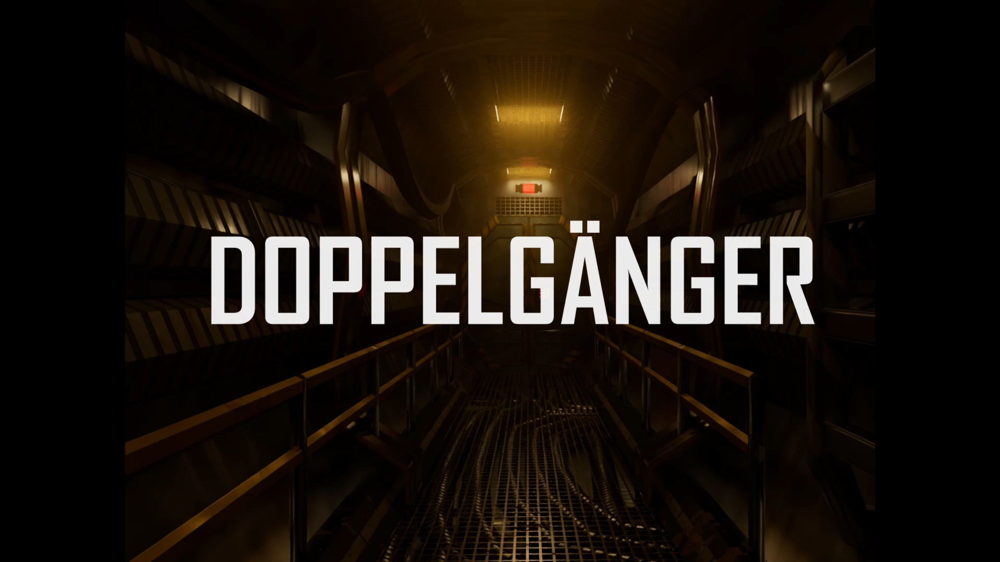
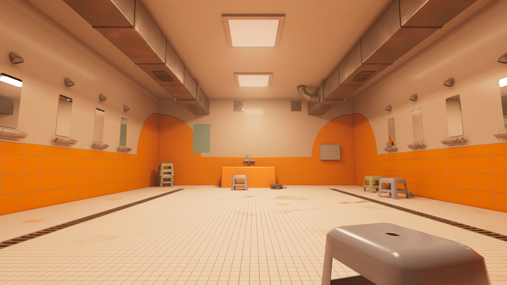
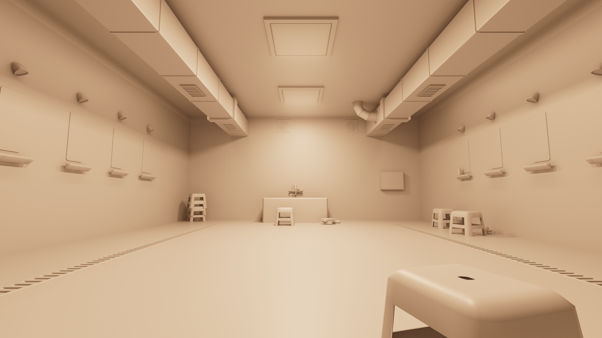

Forced into action Julie shoots what might be an alien intruder, but how will she live with herself if she made the wrong choice. This 2D/3D mixed media production focuses on the less explored doppelgänger scenario where recent trauma washes over the main character alienated on a space station.
The focus of the short is to have the 3D and 2D clash between background and characters and to hug the narrative in atmospheric lighting and atmosphere.
Role: Production Manager, CG Generalist
Director: Lovisa Andersson
Production Team: Anton Skogsberg, Camilla Venø Nielsen, Catarina Amaro, Kristoffer Frandsen, Lee-Yam Naaman, Lovisa Andersson, Petra Medin

